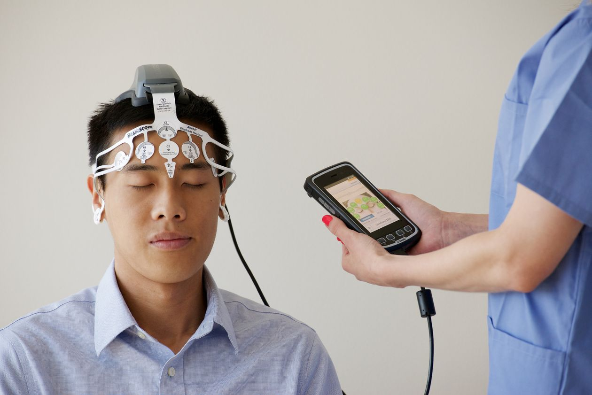

BCI signal processing · research & assistive technology
Signals, not mind reading.
I build and audit the signal pipelines behind non-invasive EEG research: the filtering, epoching and artefact rejection that decide whether a result is a result. Most of the job is throwing data away — honestly, and in writing.
The signal
Scalp potentials, in microvolts
The bands
δ θ α β γ · 0.5 Hz and up
The real work
Artefact rejection, logged
The limit
Non-invasive. No exceptions

The Band Explorer
Five bands · one honest line eachEEG is the summed electrical activity of cortex, picked up at the scalp in microvolts — millionths of a volt. By convention it is read in five frequency bands. Pick one: the sheet shows its character, where it dominates, and — the part the brochures leave out — what it does not mean.
Alpha8–13 Hz
- Range
- 8–13 Hz
- Character
- A regular, spindle-shaped rhythm — the steadiest handwriting on the sheet.
- Amplitude
- About 10–50 µV
- Dominates
- Back of the head (occipital), awake and relaxed with the eyes closed. It blocks — visibly shrinks — the moment the eyes open.
What it does not mean
Alpha is not “calmness”, measured. It is the idling rhythm of the visual system, and it disappears when the eyes open and the visual world comes back in.
| Band | Range | Typical amplitude (scalp) | Seen most clearly |
|---|---|---|---|
| Delta δ | 0.5–4 Hz | Up to ~100 µV in deep sleep | Deep (NREM) sleep |
| Theta θ | 4–8 Hz | About 10–50 µV | Drowsiness, light sleep |
| Alpha α | 8–13 Hz | About 10–50 µV | Awake, eyes closed, occipital |
| Beta β | 13–30 Hz | About 5–20 µV | Alert thought, frontal / central |
| Gamma γ | 30 Hz and up | A few µV at most | Task cortex — and every muscle |
Amplitudes are typical adult scalp values, stated as approximations — any single record can sit outside them, which is a finding, not an error.
The Artefact Panel
The skill is the throwing-awayBefore any band means anything, the record has to survive its artefacts — signals that are not brain at all, and are usually bigger than the ones that are. Eye blinks and muscle noise dwarf the EEG; mains hum writes through everything. This panel is the honest core of the trade: three impostors, their signatures, and how each is handled.
Eye blink
- Signature
- One large, smooth deflection, roughly 200–400 ms long, standing alone in an otherwise quiet trace.
- Where
- Largest at the front of the head (Fp1/Fp2) and fading towards the back — the eyes are electrical, and they sit close to those electrodes.
- Size
- Often 50–150 µV — bigger than any band on the reference table beside it.
The honest handling
Record a dedicated eye channel (EOG) at every session, without exception. Then reject or correct the affected epochs — and log how many went. A blink must never be averaged into a result.
One honest signal: the P300
Why a speller can work at allAttention leaves a timestamp
Show a person a stream of flashes where one item in many is the one they are counting, and about 300 milliseconds after that item appears, the averaged EEG carries a positive bump — the P300. It is one of the most replicated findings in the field, and it is the whole basis of the P300 speller: attend to a letter, and the bump says which one.
Two honest qualifications, printed here rather than in a footnote. First, the bump is invisible in any single trial — it emerges only after averaging dozens, because the background EEG is louder than the response. Second, that is why a speller is slow: letters arrive at the speed of averaging, not the speed of thought. Case File 02 shows what that means in practice.
Services register
What is on the book nowBooking — 2 slots this quarter
Booking open
1 slot this quarter
Recording-protocol review
Booking open
Signal-processing training
By arrangement
Attached to Case File 01 — the dataset audit
“Marta's audit saved us from submitting an artefact. She showed us our effect sitting in the eye channel, in writing, before the paper went anywhere — and then stayed to help us record it properly.”
Prof. Laura Benedetti · Principal Investigator, Language & Cognition Laboratory (client, Case File 01)
Fees, in print
The shape, before any conversation- ConsultancyDay rate, on site or remote€1,150 / day
- Dataset quality auditFixed fee, set by dataset hours before work startsfrom €4,800
- Offline analysis pipelineScoped in writing, staged paymentsfrom €16,000
- Real-time prototype supportSpeller and communication-aid pipelinesfrom €22,000
- Team trainingTwo days on site, up to 8 people€5,200
Fees buy engineering time and a written record. Ethics approval, participant recruitment and clinical oversight belong to the client institution — always, and never bundled into an engineering fee.
What moves the price
- Channel count. Sixteen channels and 128 channels are different jobs at every step downstream.
- Dataset hours. Auditing 4 hours of data is not auditing 400; the fee follows the hours.
- Real-time vs offline. Real-time adds soak testing, gap logging and failure behaviour — priced in, not discovered later.
- Documentation. Undocumented data costs a documentation week before analysis can honestly start.
- Travel. Beyond Kraków, at cost, agreed in advance.